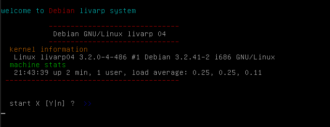
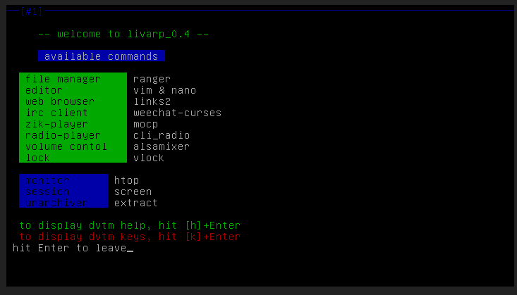

lang fr|gb

la session dvtm
DVTM : le gestionnaire de terminal en console
dvtm reprend le principe du gestionnaire de fenêtres 'tiling', popularisé par des wms comme dwm, mais en console. En tant que gestionnaire de fenêtres de terminal, dvtm tente de faciliter votre travail avec plusieurs applications en console..
dvtm s'efforce d'adhérer à la philosophie UNIX. Il essaie de faire une chose, la gestion dynamique de fenêtres de la console, et de le faire bien. dvtm n'implémente pas la gestion des sessions. Contrairement à tmux il ne suit pas un modèle client/serveur. donc dvtm n'a pas de support pour les sessions qui sont partagées entre plusieurs utilisateurs sur des machines différentes. Ce sont des décisions de conception et elles sont considérées comme des caractéristiques, pas des erreurs. le code source de dvtm est relativement court (~ 3600 lignes de C ANSI), simple et donc facile à modifier.
Layouts
dvtm est un tiling window manager, c'est à dire qu'il affiche vos fenêtres (clients) afin qu'elles occupent la totalité de la surface de la console. les clients sont organisés de différentes façons (layouts) pour optimiser la visibilité de vos applications ouvertes.les layouts s'organisent autour du Master (zone principale) et du Stack (zone d'empilement des autres clients).
dvtm utilise par défaut 4 disposition (layouts) pour organiser vos fenêtres à l'écran.
- Vertical Stack Tiling (defaut) : la moitié gauche de l'écran (master area) est utilisée par la fenêtre principale, les autres fenêtres s'empilent dans la moitié de droite.
- Bottom Stack Tiling : la moitié supérieure de l'écran (master area) est utilisée par la fenêtre principale, les autres fenêtres s'empilent dans la moitié inférieure
- Grid : organise les fenêtres à tailles égales sur l'écran.
- Fullscreen : affiche uniquement la fenêtre principale en plein écran.
lancement
dvtm est lancé par le fichier ~/.zprofile ou ~/.profile selon que vous utilisiez zsh ou bash. mais il peut se lancer depuis n'importe quel tty ou terminal sous X
pour changer vos applications lancées au démarrage, éditer ce fichier:



configuration
dvtm n'accepte que quelques options en ligne de commande:
- -v affiche la version puis quitte.
- -m mod détermine la combinaison de la touche de modification durant la session, écrasant la valeur définie dans config.h. ex: '-m ^w' définira 'MOD=CTRL+w'. utile si vous lancez plusieurs sessions de dvtm.
- [command] : exécute 'command' après le lancement de dvtm.
- -s status-fifo si 'status-fifo' est un 'pipe' valide, dvtm lit la sortie et l'affiche dans la barre de statut.
raccourcis clavier
dvtm est entièrement pilotable depuis le clavier: control, lanceurs, navigation, manipulation des tags et clients...
les raccourcis clavier/souris sont définis dans le fichier config.h des sources lors de la compilation.
Tous les raccourcis clavier dvtm démarrent par un modificateur commun (mentionné MOD). MOD par défaut est réglé sur CTRL+g mais cela peut être modifié en session avec l'indicateur '-m' de la ligne de commande ou lors de la compilation en changeant config.h.
- MOD-c : ouvrir une nouvelle fenêtre de terminal.
- Mod-x : ferme la fenêtre active.
- Mod-l : agrandit la fenêtre principale de 5% (sauf en 'grid' ou 'fullscreen').
- Mod-h : réduit la fenêtre principale de 5% (sauf en 'grid' ou 'fullscreen').
- Mod-j : active la fenêtre suivante.
- Mod-k : active la fenêtre précédente.
- Mod-[1..n] : active la fenêtre 'n'.
- Mod-. : minimise/restore la fenêtre.
- Mod-u : active la fenêtre suivante non-minimisée.
- Mod-i : active la fenêtre précédente non-minimisée.
- Mod-m : active le mode fullscreen.
- Mod-PageUp : remonte l'historique écran.
- Mod-PageDown : descend l'historique écran.
- Mod-Space : circule entre les dispositions (layouts).
- Mod-Enter : échange entre la fenêtre active et la fenêtre principale.
- Mod-t : disposition tiling vertical.
- Mod-b : disposition tiling horizontal.
- Mod-g : disposition en grille.
- Mod-s : affiche/masque la barre de statut.
- Mod-r : redessine l'écran.
- Mod-G : annule la commande précédente.
- Mod-a : active le multiplexing: la commande est envoyée à toutes les fenêtres non-minimisées.
- Mod-X : verrouille l'écran.
- Mod-B : (dés)active l'alarme sonore (désactivé par défaut).
- Mod-M : (dés)active la capture de la souris.
- Mod-q : quitte dvtm.